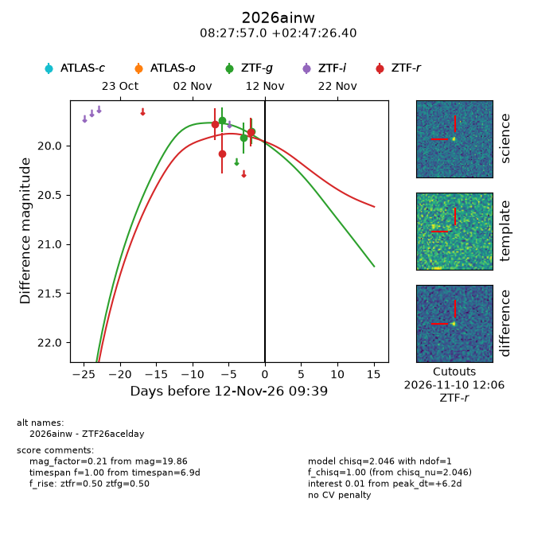
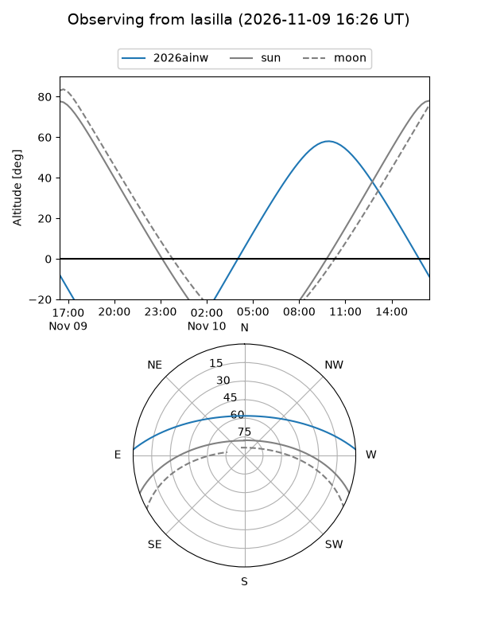
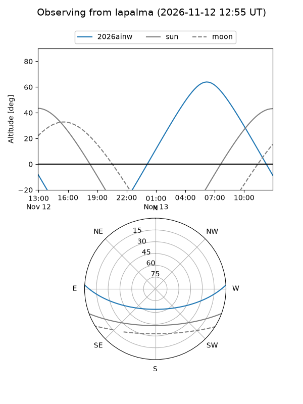
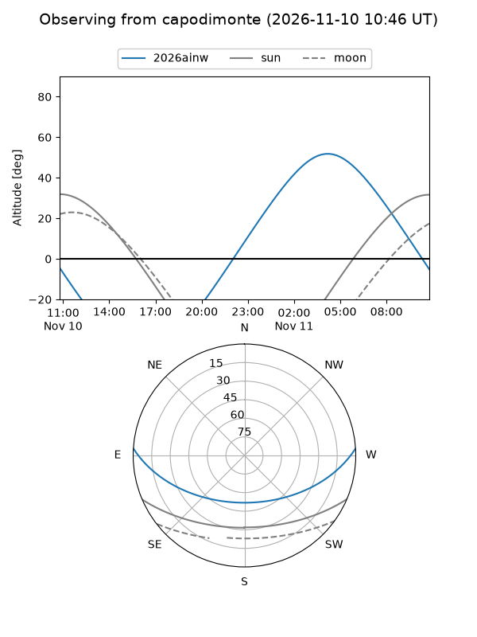
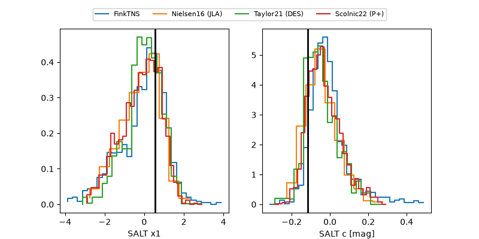

2026ainw
Target 2026ainw at 2026-11-12 09:45
Aliases and brokers:
FINK-ZTF: ztf.fink-portal.org/ZTF26acelday
Lasair-ZTF: lasair-ztf.lsst.ac.uk/objects/ZTF26acelday
ALeRCE-ZTF: alerce.online/object/ZTF26acelday
YSE-PZ: ziggy.ucolick.org/yse/transient_detail/2026ainw
TNS name: wis-tns.org/object/2026ainw
Direct TNS query: direct search
alt names
ZTF26acelday (ztf,fink_ztf)
2026ainw (tns,yse)
Coordinates:
equatorial (ra, dec) = 126.9874,+2.79067
equatorial (HMS+DMS) = 08:27:56.98,+02:47:26.40
galactic (l, b) = (221.8379,+22.67939)
Flags:
peak dt: +6.2
Photometry:
last ztfg=19.86, ztfr=19.86
3 ztfg, 3 ztfr detections
Lightcurve

Visibility



Additional plots
